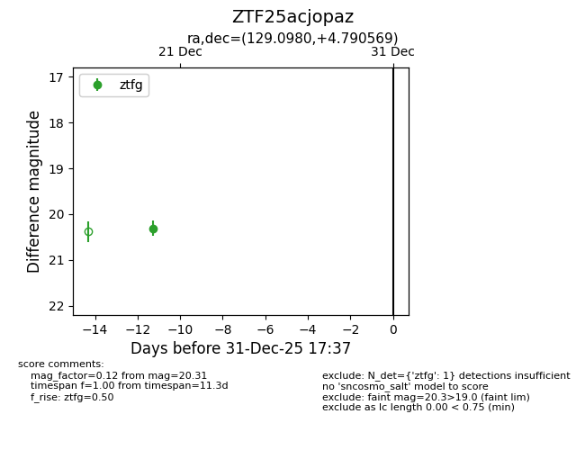
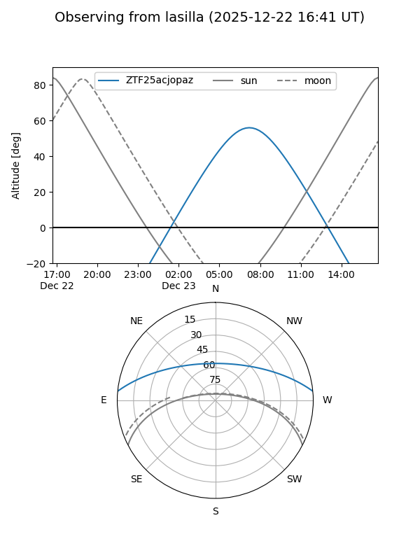
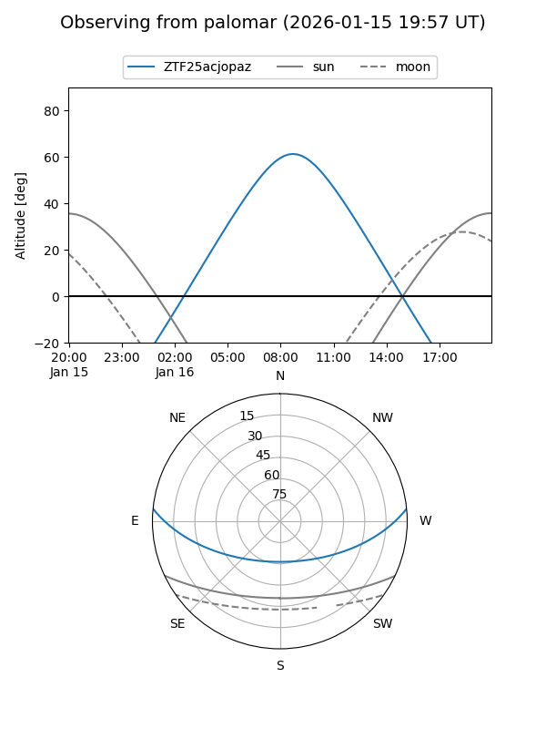
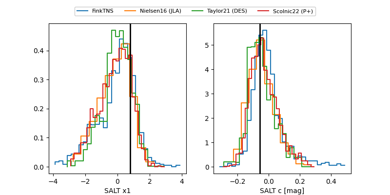

ZTF25acjopaz
Target ZTF25acjopaz at 2025-12-26 16:17
Aliases and brokers:
FINK: fink-portal.org/ZTF25acjopaz
Lasair: lasair-ztf.lsst.ac.uk/objects/ZTF25acjopaz
ALeRCE: alerce.online/object/ZTF25acjopaz
alt names
ZTF25acjopaz (ztf,fink_ztf)
Coordinates:
equatorial (ra, dec) = 129.0980,+4.79057
equatorial (HMS+DMS) = 08:36:23.53,+04:47:26.05
galactic (l, b) = (220.9913,+25.47890)
Flags:
Photometry:
last ztfg=20.31
1 ztfg detections
Lightcurve

Visibility


Additional plots
